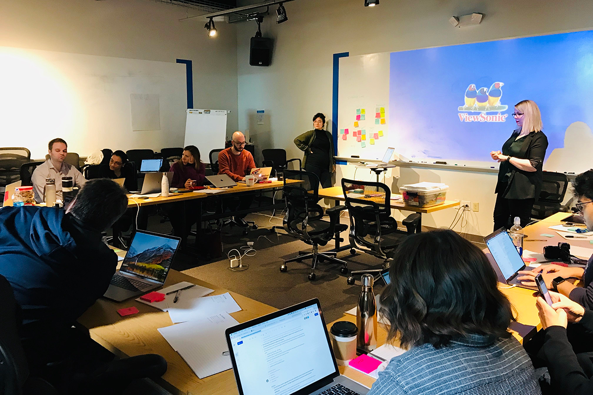
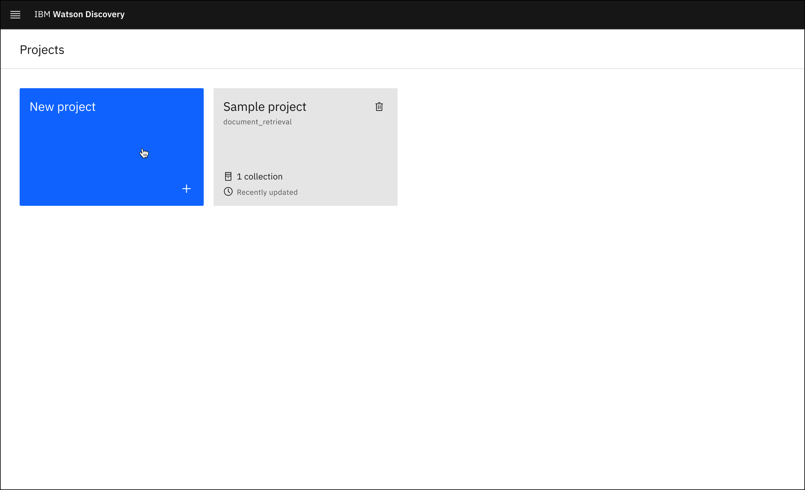
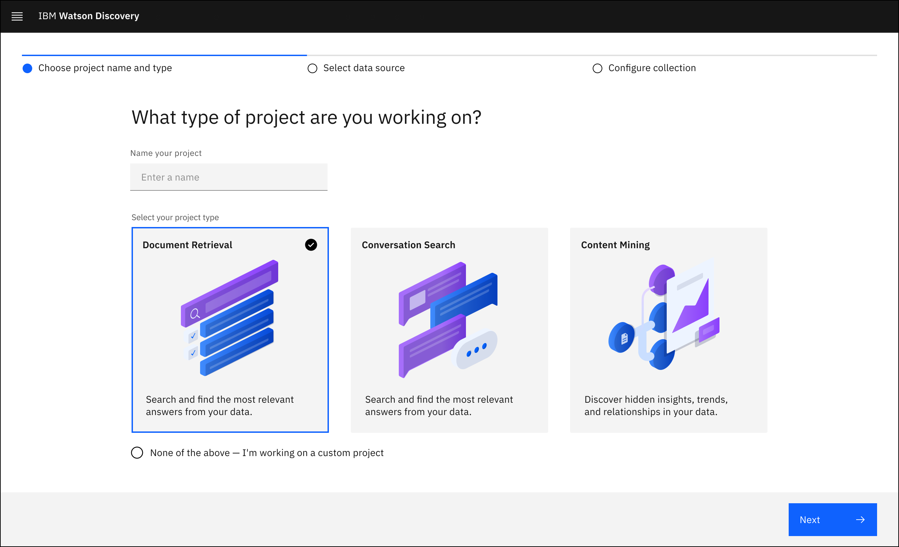
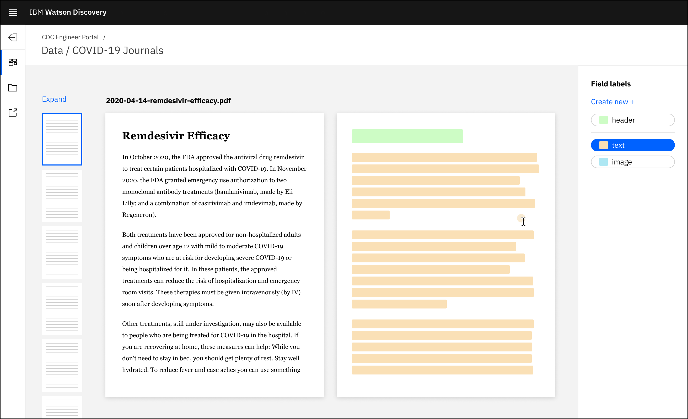
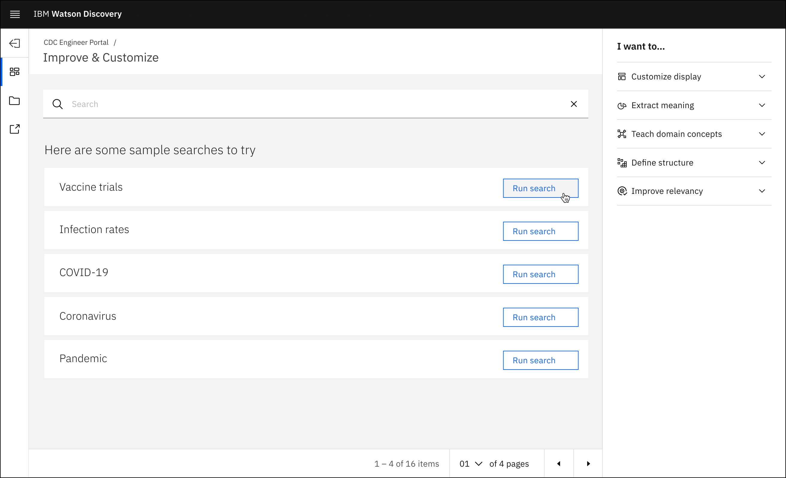
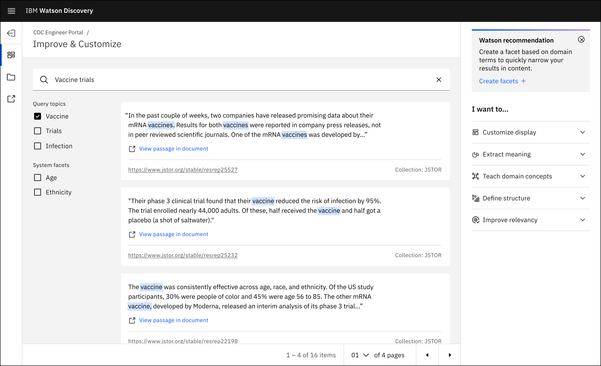
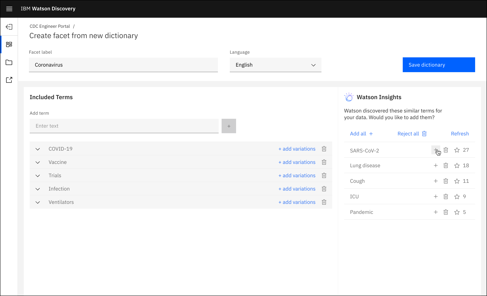
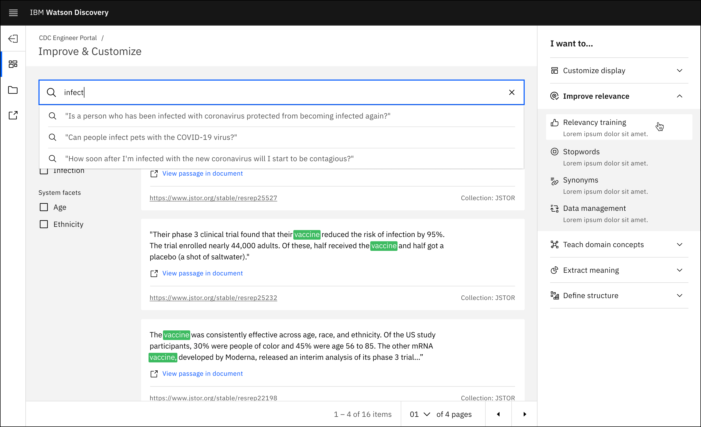

IBM – Watson Discovery
Interaction • Research
Watson Discovery
Beginning in March 2019, I had the privilege to join the Watson Discovery design team following my graduation from IBM’s interdisciplinary Patterns bootcamp.
Watson Discovery is an AI-powered application that uses text analytics and natural language processing to allow users to create robust enterprise search engines. Companies upload their massive bodies of data and then utilize Watson Discovery to analyze and find answers to complex domain-specific questions.
The Watson Discovery design team worked to democratize the current user experience and transform it into a product that could allow non-technical Data and Business Analysts to build custom AI-powered document search applications.
Project NinjaZ
Beginning in late 2018 the Watson Discovery design team visited clients in Japan in an effort to understand the needs of business users. Designers sat side-by-side with the employees to see their current workflows firsthand. Through workshops, sponsor user feedback, and remote testing, we were able to piece together a clearer picture of “the business user” to see what Watson Discovery’s functionality could do for them.
We were primarily concerned with how to democratize and simplify the current user experience and transform it into a product that could allow non-technical Data and Business Analysts to build custom AI-powered document search applications.
Our Solution
Following a series of in-person workshops, remote user testing, and sponsor user feedback, the team was able to craft a clearer picture of the non-technical business user. They were typically some type of analyst, often wearing multiple hats Through various workshops, remote user testing, and sponsor user feedback we were able to piece together a clearer picture of “the business user” to see what Watson Discovery’s functionality could do for them.
Our User
Meet Tanya, a Public Health Analyst at the CDC. She bridges the gap between teams of analysts, scientists, and IT developers.
The design team shifted our mindset from developers to center non-technical users in a user experience revamp. The needs, wants, and expectations of these users acted as a guiding light throughout our process.
To enable our non-technical users to build out a robust internal search engine for their company, we created a WYSIWYG AI-powered Search Builder.
The Scenario
From the beginning of 2020, the CDC has been on top of everything COVID-19 related. Tanya is part of a large team of analysts and researchers responsible for finding, collecting, storing, and analyzing the vast quantity of news, scientific journal publications, infection rates, and hospital capacities among many other things.
Lucky for Tanya, Watson Discovery is here to help quickly consolidate her many disparate data sources. She creates a new project to begin.
Tanya is presented with three project types upon entering the product. She selects ‘Document Retrieval’ since the CDC has tasked her with building a search engine to enable their scientists and analysts to evaluate and search through a constantly increasing mass of document and website data.
Here, Tanya is able to upload or connect her data from a selection of different places. Everything from secure private databases to continually refreshed website crawls is available to her. She uploads a selection of recently published scientific articles.

After uploading her data she is then prompted to highlight key elements within a small selection of her documents. Tanya tags a few headers, paragraphs, and images. In doing this, Watson Discovery can accurately replicate the highlighted patterns across Tanya's entire corpus of data after only a few pages of her labeling.
Field identification
This video illustrates a user tagging different text elements from one page of their uploaded document. Field identification helps Watson Discovery better identify typographic hierarchy through image recognition. This enables the system to extract keywords and concepts that it uses to build out a custom domain-specific dictionary using natural language understanding.
Once her data is appropriately labeled Tanya can now navigate to the Project Preview. Here she has a visual way to build, test, and improve the CDC's AI-powered search. She wants to ensure that her search engine returns the best answers to her end-users so she runs a test query to see how it performs.
Test Queries
A key issue with previous iterations of Discovery was the length of time it took Tanya to start testing her search engine. We made it a goal to get her testing queries within the first 20 minutes of her creating a project. To do this, we collaborated with our engineers to enable Discovery to take the top words or phrases (omitting stop words of course) found within presently uploaded documents. We would then display the top 5 results to help give Tanya a way to immediately start testing out search queries.
Once she enters her first query, Tanya sees some tools she can use to improve the quality of her project. She likes the idea of providing her end-users with ways to more easily filter their search. She decides to click on “Create facets” in the Improvement panel on the right.
The Improvement Panel
To further the ease of use for both Tanya and her end-users, we wanted to create an editor that provided instant feedback. The search UI on left is updated live as Tanya configures her facet group in the Improvement panel. Now her end-users can easily filter their results using domain specific facets.
After creating a few facets for her teammates, Tanya navigates to "Dictionaries" is interested to see what terms and concepts Watson Discovery has extracted from her data corpus. She sees existing terms that she is currently using on the left and new recommended ones on the right.
Creating Dictionaries
Dictionaries exists as a one-stop place for users to see what terms have already been catalogued as well as terms that Watson recommends. Tanya can use the dictionary tool to create additional terms for use in facets, domain concepts, and to extract meaning among other improvements.
After customising her dictionary, she sees that there is still more she can do to improve the quality of her search engine. She wants to improve the relevancy of her search results so she clicks on "Relevancy training" in the panel.
Relevancy Training
Another key method to training AI is giving it a simple "Yes" or "No" to the things it suggests. Relevancy training is exactly that. Tanya is able to quickly tag search results as relevant or irrelevant in order train Discovery and improve her overall end-user search performance.
Tanya's Outcomes
After getting a taste for how to test her search engine and improve it via various improvement tools, Tanya is confident enough to send out a test link to her teammates. As time goes on, Tanya and her team at the CDC will have a robust AI-powered search engine that can transform and adapt to fit a constantly growing body of COVID-19 related data.
Overall Impacts
The end result brought a set of tools historically geared towards developers, data scientists, and AI engineers, right into the hands of the most underutilized user base: business users.
To cater to their workflow, the out-of-box models retrieve pertinent information from the data and provide the user with a set of tools to customize their project. Business users can also react to changes and continuously iterate. This allows them to both meet their end goal and see small, valuable victories each step of the way.
Our team's work led to improved time and cost savings and increased revenue through reduced employee workloads. In collaboration with our developers, we empowered customer employees to use cutting-edge natural language processing to spend less time searching for information and more time to act on valuable insights.

Discovery powered the Open Questions and Match Insights for the US Open, which reached over 6.8 million users and over 475 clients who enjoyed behind the scenes virtual tours. Meanwhile for ESPN's Fantasy Football, over 10 million users engaged with Watson-delivered insights in the ESPN Fantasy Football app to help make better trades.
Watson Discovery was a finalist in Fast Company’s 2020 Innovation by Design Award. Read our Design Principal, Arin Bhowmick's press release, IBM Watson Discovery wins a finalist spot in Fast Company’s 2020 Innovation by Design Awards
© Mostyn Griffith 2020